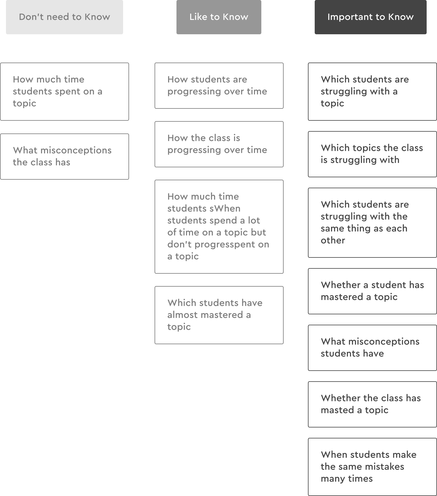

BACKGROUND
Data-driven instruction is an older idea that we have been hearing for years. However, what does it
really mean in teachers' everyday life?
We dug into Study Island as a starting point of this problem. Supporting over 24,000 schools, Study
Island provides a wealth of data to improve teachers' teaching. However, a large number of teachers
never access the data, or use it to inform teaching.
We realized it's not the quantity of the data that counts, but how it is being used. Thus, our goal is
to encourage teachers to use the data more frequently in a way that truly helps with their teaching.
Data is structured into 18 categories.Users get frustrated because they do not know which one might contain the information they are looking for.
Data is currently displayed in rows, columns and raw texts. But this is not how teachers think. They think in questions about their students.
A few experienced teachers have developed their own ways of interpreting data. For these power users, they are seeking explicit next-steps, which is not supported in the current platform.
A data dashboard that helps teachers access and interpret their students' data in a more efficient way and get actionable recommendations driven by data.

Lighthouse allows teachers to dive into data right away without going through any clicks or recalling. Everything teachers are curious about their students is in one place.
We allow teachers to recognize the report at a glance without recalling detailed information in the filters.
One step further, we allow teachers to pin the reports they frequently visit to the navigation bar.
Rather than framing data as an entity teachers need to understand, we shaped it into the information that rises naturally from teachers daily teaching. Who are struggling? What are they struggling with? We brought the answers of these questions to the front and center.
Assigning extra assignment may take a long time to complete manually in the report. We want to streamline this process and at the same time, give enough teacher control to edit questions or save it for later.
At the outset of the project, we did not have a clear mission or pre-existing insights for teachers
experience using data. We started literature review and competitive analysis to understand the current
landscape.
We translated the key concepts into a framework that guided our direction. Our high-level
after this stage was to design a platform that informs teaching decisions on an individual level.
In order to dive into Study Island's users experience using data, we talked to 13 teachers in 4 states.
Due to the limited resource of users we could reach out to, we also conducted a survey and usage data
analysis as supplementary research.
To identify the common themes and hierarchies, we used affinity diagram to cluster the notes from
interview and survey.
Although teachers have different purposes (Remediation, Test Prep, Practice) for using Study Island,
their general workflow is quite similar: access, interpret and take actions.
We segmented our users
into three groups based on their frequency of data usage and engagement with the platform. It is not
surprising that, as Study Island is becoming a more integral piece into their daily teaching, their
needs also evolve.
It was one of the most interesting and also challenging part of this project since we were looking for a light in the mist. The brainstorming session as a team sparked tons of ideas but on the other hand, added to the difficulty of converging. We sit together as a team, drew down the storyboard or the scenario of each idea, then categorized and prioritized all the ideas against the user needs, technology feasibility and business objectives. We narrowed down to seven ideas that were rated highest within the team. However, we still cannot see how these seven ideas can bring a cohesive design concept.
I visualized the seven ideas in storyboards and the team pitched them to our clients. This allowed us to conceptulize the use cases and align our vision with our clients.
To better understand the businees requirements and get feedback from our clients, we had them rated
our
ideas. Finally we narrowed down to these four ideas:
We started from the Homepage and Navigation Design since they decide how teachers access the data
from the first place and navigate through the whole platform.
We came up with three design alternatives based on user research: showing reports directly, providing
data summary, smartsearch.
We tested the homepage design in our first user testing with three users.
Teachers would like to jump to the data insights right away with least effort. We decided to design our
homepage into a dashboard to provie a quickview of the data.
We assumed everything in a teachers’ workflow is related to either an assignment, or a class, or
student. So we gave quick access to these 3 essential information on the navigation.
However, in
teachers mental model, everything is associated within one class. Teachers would like to start from
class level then dive into the information. Thus, we redesigned our navigation with the class at the
first level.
We conducted a cardsorting with teachers to figure out what information they are most curious about their students.
To identify what was the best way to present the data, I came up with different visualization design for the same type of data and tested with users.
I designed Interactive Views, which users can click on different bars to view correlated data on the right and on the bottom.However, teachers failed to visually link these three parts.
Teachers have extremely little time. From the user testing, teachers would like the recommendations to
be actionable, which allows them to quickly assign extra practice to students. However, it is informed
that teachers want to be in control of making decisions.
To balance between efficiency and user control, we provided users with the options to edit questions. We
also left them the freedom of accepting the recommendations or not based on their own judgements.
Supporting this may increase teachers’ trust in the system and make them more likely to use the
recommendations feature.
“I'd like to see the specific questions...”
“This is my favorite page so far”

We wanted to find out whether the final design of Lighthouse had achieved our goal of making it easier for teachers to use data in Study Island. At the end of the project, we performed a task-based evaluation test using three metrics: Time of completion and Number of clicks for a teaching related task, teachers' satisfaction through Rating on a scale of 1-10.
"My not-so-computer-savvy friend could do much better with [Lighthouse] because it’s so much more clear"
"It’s nice because all the data is right there. I don’t have to go in and find the class report and look on my own, this has it all right there."
"Everything was easy. I’ve never used this ever and I was able to navigate through this more easily than something I’ve been working with for 3 years"
"All the stuff I want to see is in one place."